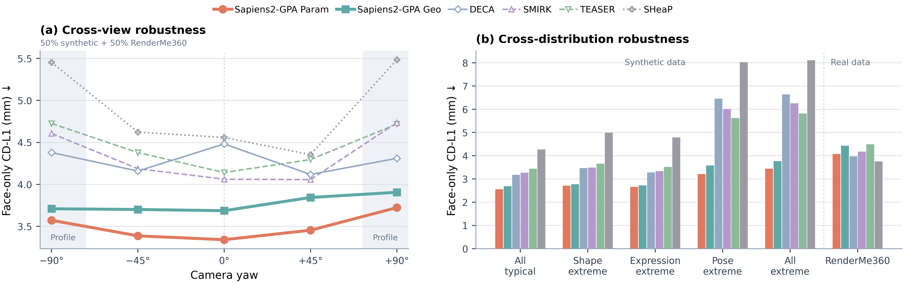

Face reconstruction robustness. (a) Cross-view robustness shows face-only
CD-L1 across five camera yaw angles; each point gives equal weight to the synthetic
FLAME and RenderMe360 results at that angle. (b) Cross-distribution robustness
compares five synthetic FLAME parameter regimes with the real RenderMe360 dataset.
Both panels report face-only CD-L1 in millimeters after rigid alignment; lower is better.
Face-only reconstruction across synthetic FLAME subsets and the RenderMe360 dataset.
The synthetic subsets separate typical cases from challenging shape, expression,
and pose settings, including a combined extreme subset.
ViGA-FLAME is trained on images rendered from FLAME2023, while the baseline methods use FLAME2020-based decoders.
All five synthetic test subsets are generated with FLAME2020, making this a cross-version evaluation for ViGA-FLAME.
The RenderMe360 reference meshes are reconstructed from the dataset’s FLAME2020 fitting annotations.
Each result averages the
five camera views after rigid ICP alignment. CD-L1 measures surface error in
millimeters (lower is better), while F@5 measures agreement within 5 mm (higher
is better). Best results are in bold.
Δ denotes ViGA-FLAME Param. minus the strongest baseline for each metric;
negative CD-L1 and positive F@5 indicate improvements.
| Method |
All typical |
Shape extreme |
Expression extreme |
Pose extreme |
All extreme |
RenderMe360 |
| CD-L1↓ | F@5↑ |
CD-L1↓ | F@5↑ |
CD-L1↓ | F@5↑ |
CD-L1↓ | F@5↑ |
CD-L1↓ | F@5↑ |
CD-L1↓ | F@5↑ |
| DECA |
3.181 | 0.864 |
3.468 | 0.822 |
3.285 | 0.849 |
6.460 | 0.650 |
6.642 | 0.608 |
3.972 | 0.747 |
| SMIRK |
3.267 | 0.848 |
3.489 | 0.819 |
3.341 | 0.835 |
6.016 | 0.653 |
6.260 | 0.618 |
4.184 | 0.723 |
| TEASER |
3.443 | 0.821 |
3.662 | 0.792 |
3.517 | 0.812 |
5.620 | 0.642 |
5.817 | 0.615 |
4.492 | 0.693 |
| SHeaP |
4.269 | 0.823 |
4.988 | 0.769 |
4.786 | 0.788 |
8.023 | 0.613 |
8.113 | 0.585 |
3.754 | 0.780 |
| ViGA-FLAME Recon. |
2.693 | 0.937 |
2.774 | 0.923 |
2.727 | 0.930 |
3.581 | 0.835 |
3.768 | 0.798 |
4.430 | 0.696 |
| ViGA-FLAME Param. |
2.556 | 0.949 |
2.710 | 0.929 |
2.659 | 0.938 |
3.212 | 0.868 |
3.445 | 0.833 |
4.074 | 0.731 |
| Δ vs. best baseline |
-0.625 | +0.085 |
-0.758 | +0.107 |
-0.626 | +0.089 |
-2.408 | +0.215 |
-2.372 | +0.215 |
+0.320 | -0.049 |
The parametric branch achieves the best results across all five synthetic FLAME subsets,
with particularly clear gains under extreme pose and combined extreme conditions.
RenderMe360 provides a complementary evaluation on real multiview captures,
using reference meshes reconstructed from the dataset’s optimization-fitted FLAME annotations.
Together, these experiments assess reconstruction across controlled parameter variations and real captured faces.
Face-only reconstruction across camera viewpoints.
The same synthetic evaluation is regrouped by viewing angle: frontal (0°),
oblique (±45°), and profile (±90°). Each group pools all five
FLAME parameter subsets after rigid ICP alignment, isolating the effect of
viewpoint while retaining variation in shape, expression, and pose. CD-L1 is in
millimeters; lower CD-L1 and higher F@5 are better. Best results are in bold.
| Method |
Frontal (0°) |
Oblique (±45°) |
Profile (±90°) |
| CD-L1↓ | F@5↑ |
CD-L1↓ | F@5↑ |
CD-L1↓ | F@5↑ |
| DECA |
5.263 | 0.756 |
4.387 | 0.775 |
4.499 | 0.744 |
| SMIRK |
4.394 | 0.779 |
4.373 | 0.774 |
4.616 | 0.723 |
| TEASER |
4.116 | 0.772 |
4.407 | 0.745 |
4.564 | 0.710 |
| SHeaP |
5.642 | 0.736 |
5.408 | 0.743 |
6.860 | 0.678 |
| ViGA-FLAME Recon. |
3.019 | 0.902 |
3.011 | 0.896 |
3.251 | 0.864 |
| ViGA-FLAME Param. |
2.723 | 0.930 |
2.820 | 0.915 |
3.109 | 0.879 |
Both ViGA-FLAME branches retain their lead across the three angle groups. Their
errors increase and F@5 scores decrease at profile views, showing that side views
remain harder than frontal views even when the global rigid pose is aligned.
Ablation studies of PG-VAE variations.
These results use randomly sampled FLAME states with varied orientations.
The three columns report mean corresponding-vertex errors in millimeters for the
direct geometry reconstruction, the decoded parametric mesh, and the disagreement
between those two outputs. Lower is better. Unlike the face-only comparisons above,
these errors are measured without rigid alignment.
| Method |
Recon. ↓ |
Param. ↓ |
Recon.↔Param. ↓ |
| Base |
1.0281 | 0.9472 | 1.2707 |
| + λgLpar-gt |
0.9942 | 0.8152 | 1.1726 |
| ++ λcLpar-geo |
1.0347 | 0.7643 | 1.2344 |
| +++ Condquery |
0.8647 | 0.4975 | 0.9713 |
| +++ Condadd |
0.9831 | 0.5830 | 1.1605 |
Starting from direct reconstruction and FLAME parameter supervision, the variants
add supervision for the decoded parametric surface and then encourage agreement
between the two decoding branches. The last two rows compare replacing the learned
semantic queries with FLAME-conditioned embeddings against adding those embeddings
to the queries. Query replacement yields the lowest error in all three measures.